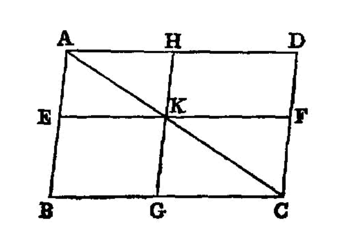

equality of parallelogram complements¶
{kind=link}
In any parallelogram the complements [^I.43:1] of the parallelograms about the diameter are equal to one another.
===
Let ABCD be a parallelogram, and AC its diameter; and about AC let EH, FG be parallelograms, and BK, KD [^I.43:2] the so-called complements;
I say that the complement BK is equal to the complement KD.
For, since ABCD is a parallelogram, and AC its diameter,
the triangle ABC is equal to the triangle ACD. [I.34]
Again, since EH is a parallelogram, and AK is its diameter,
the triangle AEK is equal to the triangle AHK.
For the same reason
the triangle KFC is also equal to KGC.
Now, since the triangle AEK is equal to the triangle AHK,
and KFC to KGC,
the triangle AEK together with KGC is equal to the triangle AHK together with KFC. [I.c.n.2]
And the whole triangle ABC is also equal to the whole ADC; therefore the complement BK which remains is equal to the complement KD which remains. [I.c.n.3]
Therefore etc.
## References
[I.34]: /elem.1.34 “Book 1 - Proposition 34” [I.c.n.2]: /elem.1.c.n.2 “Book 1 - Common Notion 2” [I.c.n.3]: /elem.1.c.n.3 “Book 1 - Common Notion 3”
## Footnotes
- [^I.43:1]: complements,
<foreign lang=”greek”>παραπληρώματα</foreign>, the figures put in to fill up (interstices).
- [^I.43:2]: and about AC….
Euclid’s phraseology here and in the next proposition implies that the complements as well as the other parallelograms are <quote>about</quote> the diagonal. The words are here <foreign lang=”greek”>περὶ δὲ τὴν ΑΓ παραλληλόγραμμα μὲν ἔστω τὰ ΕΘ, ΖΗ, τὰ δὲ λεγόμενα παραπληρώματα τὰ ΒΚ, ΚΔ</foreign>. The expression <quote>the so-called complements</quote> indicates that this technical use of <foreign lang=”greek”>παραπληρώματα</foreign> was not new, though it might not be universally known.